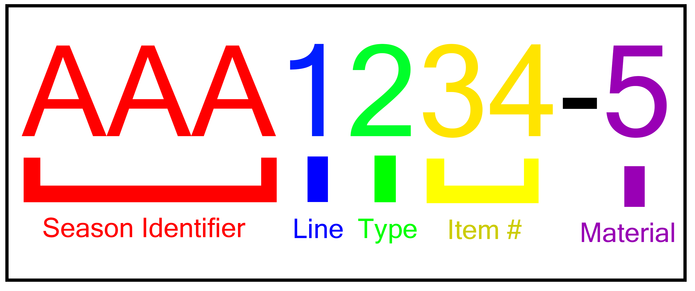
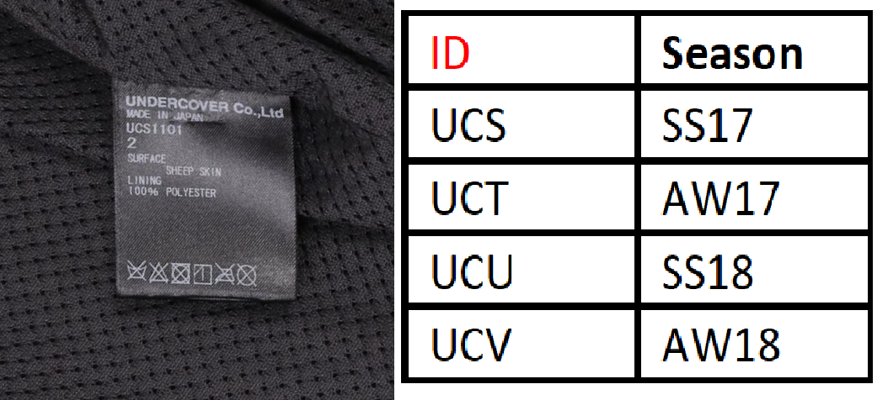

Style Codes
Because there are now 50+ seasonal collections from Undercover, there are thousands of different pieces from all different seasons. To identify what season a particular item is from, the style code on the tag can be used to pinpoint several identifying factors of an item. The year, season, line, product type, design number, and material can all be determined from items with a style-coded tag.
This style code is not perfect, however. Depending on the year of the item, the tag may be different. Typically, the older an item it, the less reliable the tag system is. T-shirts are also known to lack style codes (“Guide to Working Out What Season.”).
Season Identifier
There are 4 different kinds of tags. These codes are the first section of the tag, used to identify the season:

Vintage White Tag Season Codes

Old White Tag Season Codes

Modern White Tag Season Codes
New Black Tag Season Codes
Line Identifier
The following characters are used to identify the type of garment the tag is attached to. These are common amongst all tags:

Type Identifier
After the production line character comes the item type identifier. There are many different kinds of Undercover items:

Item Number and Material
The last 3 characters of the tag style code are more for the use of the production team. The final two characters of the main code are for that garment's number in it's particular season. The character after the hyphen indicates the material and color of the garment. These last characters can obviously be repeated from season-to-season.
Back to Top